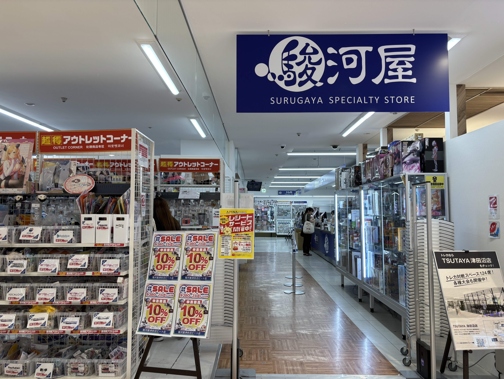

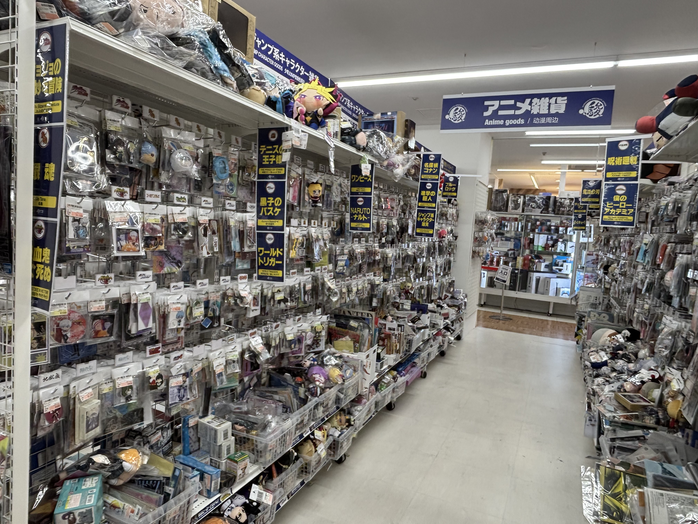
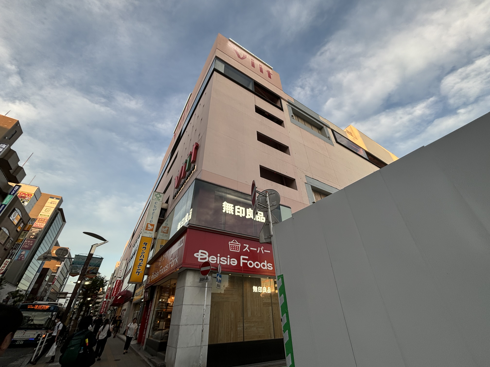
オススメをランキング形式で紹介🏆
2023年10月に津田沼パルコから生まれ変わりました
地下にはスーパーがあり暮らしの品から娯楽まで全35店舗出店しており見やすい店舗配置がされています。
新しい津田沼の顔として日々進化を遂げるショッピングセンターの一つです。
詳しい行き方は下のページで紹介しているのでご覧ください。
アクセス方法はこちら
営業時間:平日1部 12:30～16:30 2部17:30～21:30
土日祝 1部 11:00～14:00 2部 15:00～18:00 3部19:00～22:00 [休業日]休館日に準ずる
場所:RF 屋上 ※エレベーターでしか行くことができないので注意
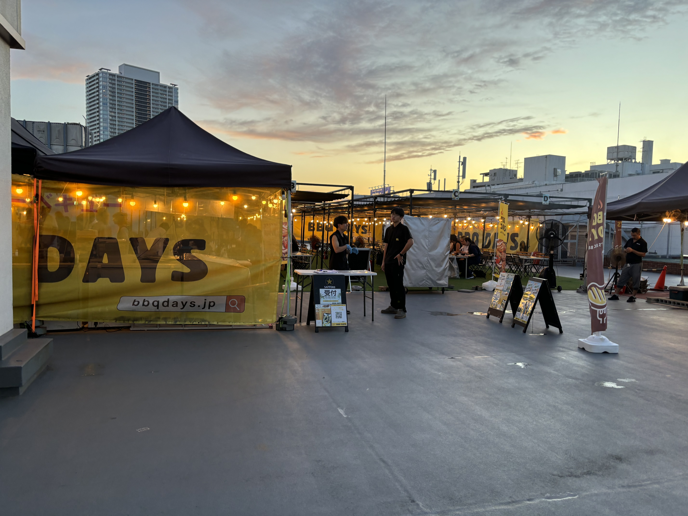
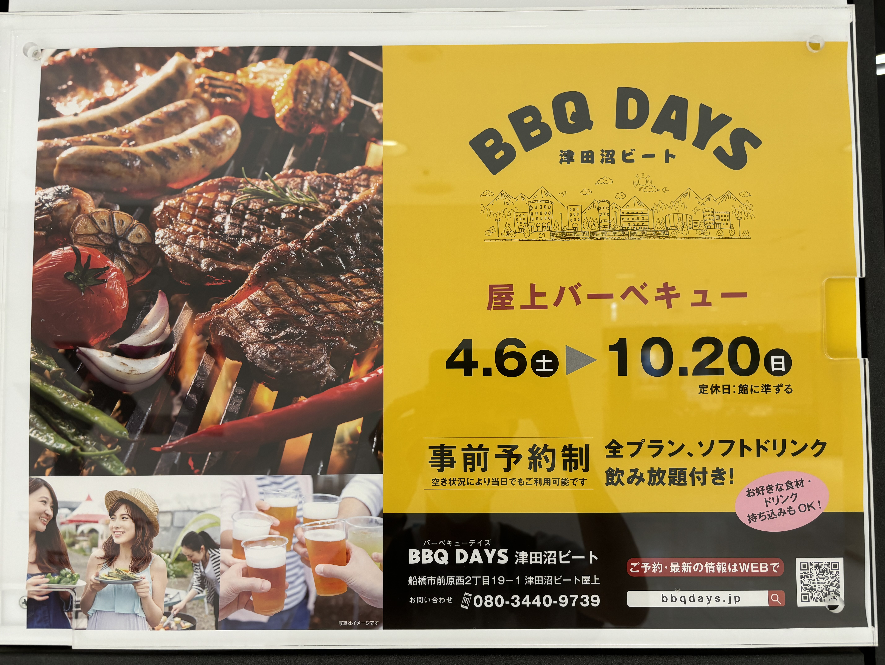
1位にランクインしたのはBBQ DAYSビート津田沼です!
バーベキューをしたいけど準備や片付けがめんどくさいと思ったことはありませんか!?そんな心配は無用
食材の持ち込みが自由で火起こしから片付けまでしなくてよい都市型BBQを楽しむことができます。
食材が無くなったり、買い足したい場合はエレベーターで地下まで行くとスーパーがあるのでスーパー直結型BBQ!
食材を買わずに料金とセットになっていて手ぶらBBQをすることもできます。
また、屋上ということで景色も抜群!雨でもテントが設置されているので天候に左右されずに楽しむことができます。
友達との思い出作りや夏にはもってこい!
※予約やプランなどはホームページをご確認ください。BBQ DAYS
営業時間:10:00〜20:00 場所:1F 入ってすぐ
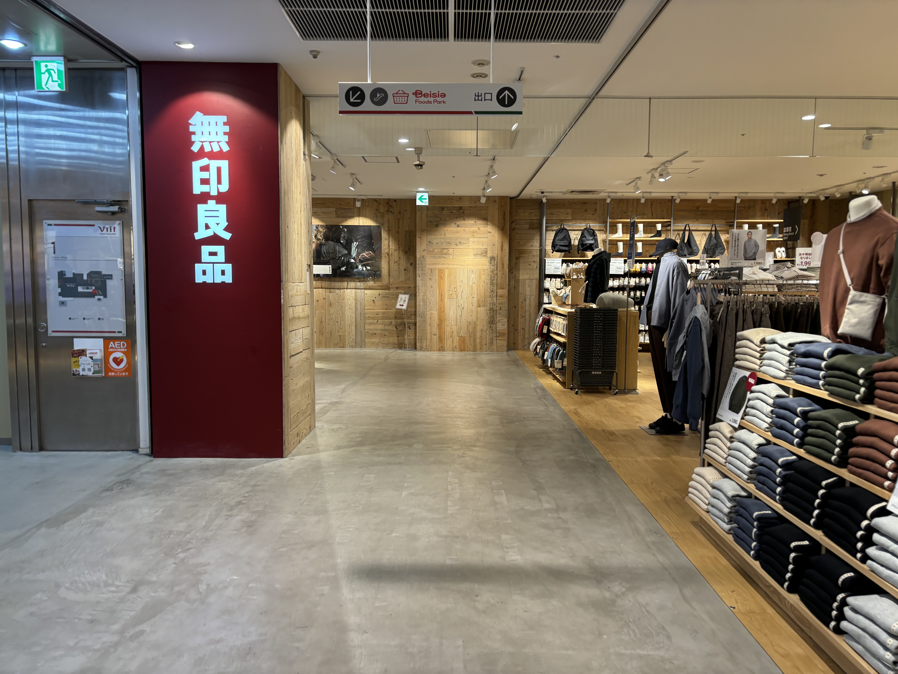
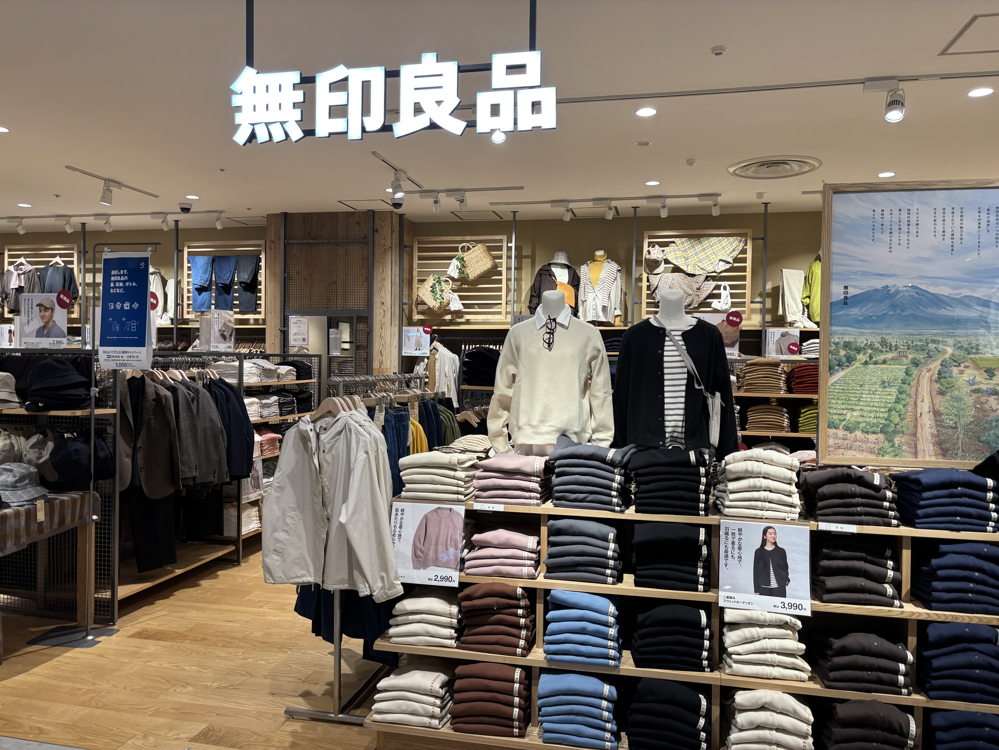
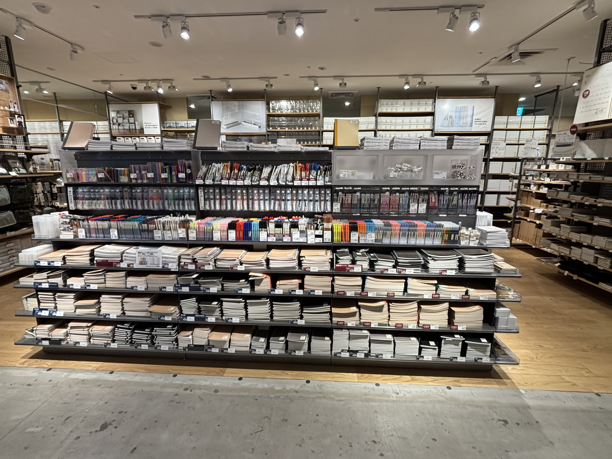
第2位は無印良品津田沼ビート店になります。
津田沼で唯一の無印良品となっていて1Fの店内には一面に商品が陳列されています。
取り扱いの商品はインテリアから文具・衣類・食品と様々でオシャレな物から便利な物まで多岐にわたっています。
写真の三枚目は文具コーナーになるのですが学生には文具は欠かせない必需品でペンだけで多くの種類があるのがわかると思います。
またメンズ・レディース問わず衣類の販売も行っているので全身無印コーデでオシャレな着こなしも可能です。
無印良品の有名な収納グッズ等も豊富に取り揃えておりこれを機に部屋のお掃除も捗ること間違いなし。
無印良品で日常生活をさらにワンアップしましょう!
※取り扱い商品に関してはホームページでご確認ください。無印良品
営業時間:10:00～21:00 場所:3F ゲームセンター横


第3位は駿河屋津田沼ビート店になります!
アニメやアイドルグッズからゲームぬいぐるみまでその数は驚異の１０万点以上と知る人ぞ知る専門店
店内には多くの商品が陳列されていて商品分類別に分けられておりその中から目的の商品を探します。
写真の三枚目はアニメグッズのコーナーになりますが今人気のアニメから年代物まで豊富な種類を取り揃え中古なら格安で購入することができます。
販売だけでなく買取も行っているのでマニアックな物を売ろうか考えてる人は高額査定のチャンス。
多くの商品の中から推しのグッズやずっと探していた物を見つけるお宝発掘のチャンス!
ホームページから店頭にある商品を検索することができるのでお目当ての物がある人は検索してみてください。
※詳しくはホームページをご確認ください。駿河屋
アクセス方法🚶➡️
所要時間:1分49秒

1. 改札を出て左(北口)に向かいます。
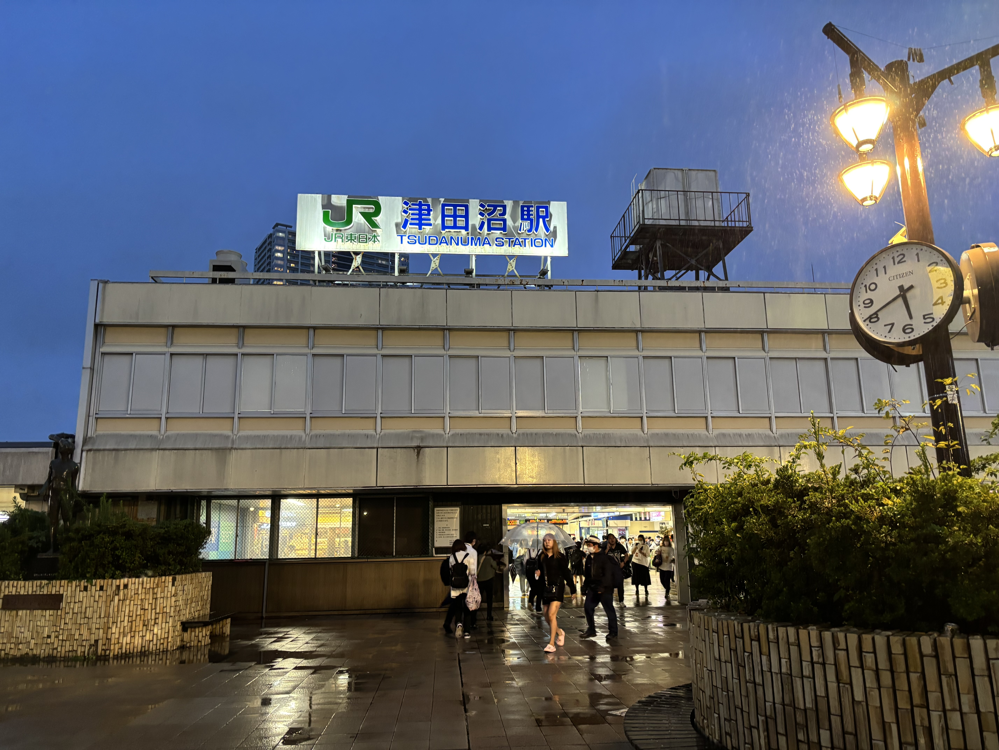
2.津田沼駅の北口に出ます。

3.北口の広場に出るのでまっすぐ進みます。。正面にViitが見えてきます。
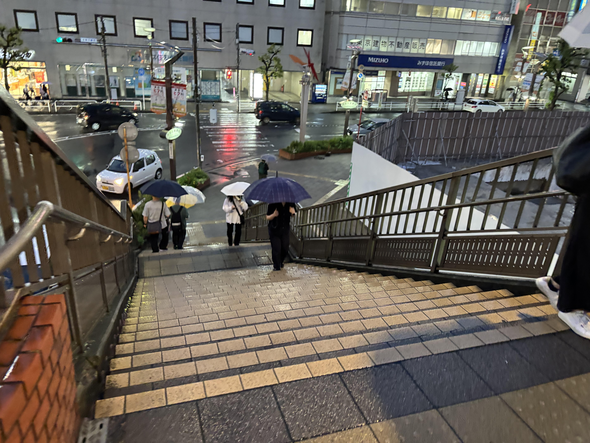
4.突き当りに左側に階段が見えてくるので下に降ります。

5.階段を降りたら右に進みます。
7.まっすぐ進むとViitに到着です。
所要時間:4分15秒
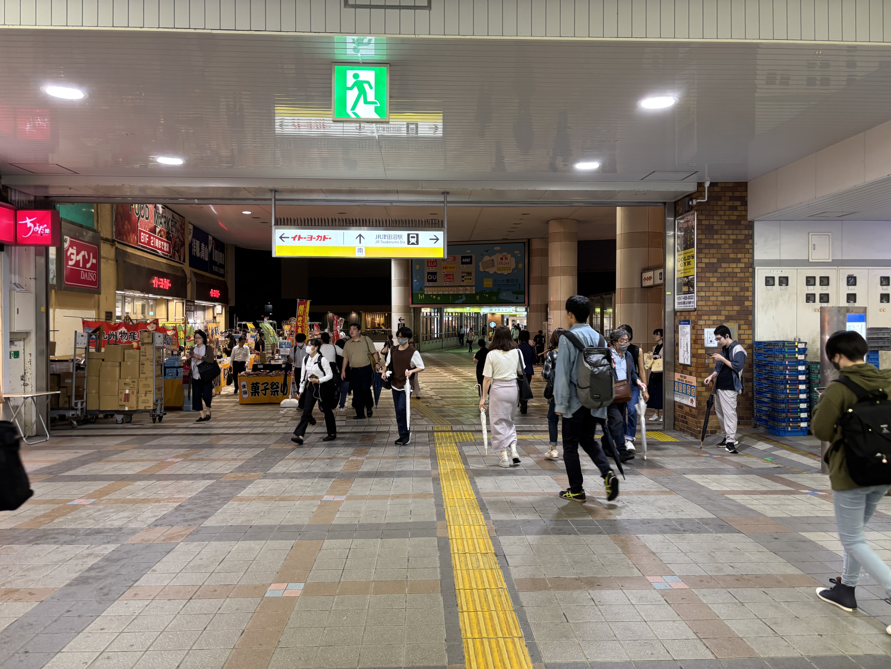
1.改札を出て左南方向へ
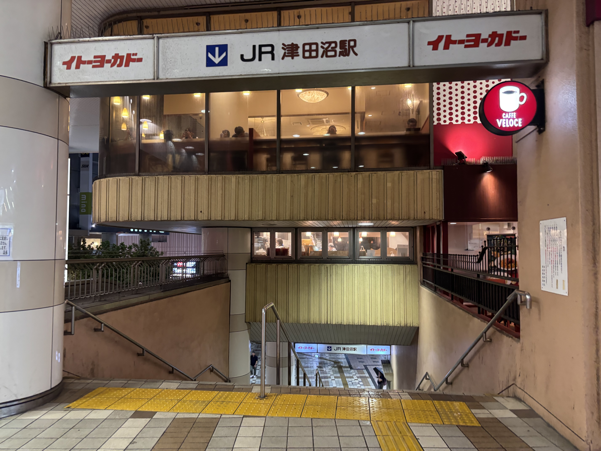
2.右側にJR津田沼駅方面の階段が見えてくるので降ります。

3.階段を降りると交差点に差し掛かるので渡りまっすぐ進みます。

4.渡ったらまっすぐ進みます。
5.突き当りに差し掛かるので右に曲がります。
6.まっすぐ進むとViitに到着です。